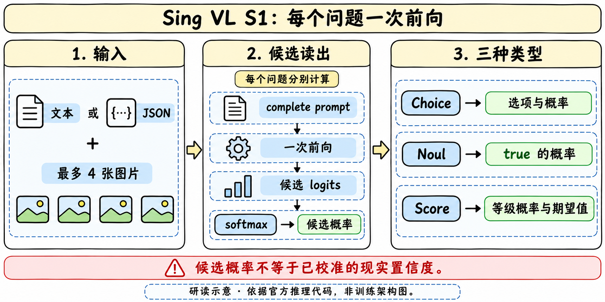

定位、接口与公开结果

| 输出类型 | 输入约束与返回 |
|---|---|
| Choice | 2–256个候选，返回候选概率和argmax标签 |
| Noul | true/false命题，返回true的候选概率 |
| Score | 2–10个按低到高排序等级；返回零起始等级概率、legend与期望 |
| 输入 | state文本或紧凑JSON，至多4张图片；一图对应一个<image> |
| 预算 | 文本每问题≤65536 tokens；带图每问题≤10000 tokens |
| 公共图预算 | 每图最多1638400 pixels；预处理含token网格对齐与BICUBIC缩放 |
| 实现 | BF16、SDPA、无KV cache；官方依赖Torch2.10.0/Transformers5.13.1 |
三等级概率0.1、0.3、0.6给Score=0×0.1+1×0.3+2×0.6=1.5；不是1–3等级，也不是某个候选文字的算术平均。JSON字段顺序、候选顺序、图像顺序和重写prompt都可能影响读出，不能只保留最终标签。
注意力、媒体与评测执行契约
配置为32个语言层、宽2560、FFN9216，每4层一层full attention，其余linear attention；视觉24层、宽1024、16heads、patch16、spatial merge2。加载器核对prefix_bidir、causal GDN、soft-choice-full-vocab-v2和last-valid-input-position。256个候选token须与tokenizer的单token双大写字母标签一致。
推理把完整state、instructions和候选描述拼成单轮prompt，在最后有效输入位置读出前N个候选token的logits，转float后只在这些候选上softmax。配置中训练侧标记full-vocabulary normalization，不等于运行时返回全词表概率；训练代码未公开，不能据metadata重建loss。源码将full-attention层设非causal，并用pre-hook拒绝带cache、padding或多行batch；linear GDN不随之变成双向。
图像特征在一次predict内先编码一次，各问题仍分别调用模型。usage.input_tokens累加每题完整输入，output_tokens=0只代表没有生成token，不能当作零成本。图像顺序匹配占位符；缺省自动前插，显式标记数量须等于图片数；保留控制token会被拒绝。Score等级按概率再归一化，Noul不另做概率校准。
FastAPI默认127.0.0.1、单worker与推理锁，body/file上限64MiB；服务端文件需落在指定image-root，禁止越界。这个示例是本机服务接口，不承诺生产吞吐或安全配置。benchmark固定Vision12210条与Text140178条、语料hash和模型索引hash；按ID检查分片完整、保存error/unsupported，不能删除不支持项后只报成功集合。代码可复查不等于本轮已真实跑测。
2026-11-13复核：GGUF分发与验证范围
官方新增GGUF仓库和SingVL collection，将既有4B模型分发为BF16、Q8_0和Q4_K_M。它沿用Choice/Noul/Score、每问题一次完整前向与最多四图的接口；不另建模型family，也不把仓库创建、collection修改时间当成新的训练代际或首发日。原family仍为2026-11月份待核。
| GGUF decoder | 卡中体积 | 共同依赖 |
|---|---|---|
| BF16 | 8.42 GB | F16视觉projector，另0.67 GB |
| Q8_0 | 4.48 GB | 同一F16视觉projector |
| Q4_K_M | 2.71 GB | 同一F16视觉projector |
这些是README给出的分发大小；decoder体积不含共享视觉projector，精确字节与校验值链接到官方manifest，本文未下载权重验证。CPU示例面向Linux x86_64，默认context 4096且包括图像token，与上文Transformers路径的65536/10000预算分别保留，不能据此宣称所有backend窗口一致。llama.cpp适配要求full-attention层对完整输入双向、GDN继续causal，每题清空KV/recurrent state，并在最后有效输入位置读取候选logits；未运行该适配。
HTTP示例通过/v1/systemone提供决策，/health暴露attention/context设置，return_details=true可返回候选与token细节。用其产物做训练比较时应连同backend、量化类型、上下文预算及每题输入记录，避免把分发差异误归为训练收益。
完整成绩、反例与训练启发
官方主卡给Text对照TypeSafe Jev1.14为60.70、StartLux67.8、Perplexity60.1；Vision为73.94，对照StartLux67.90/Perplexity72.5，Jev为空。inference/README则另列AutoTrust JEV-27B-VL72.78作为独立参考，不能填进Jev1.14的空白列。两个README的命名与对照范围不同，保留原件不拼接榜单。
Public Vision (11 datasets)
| Dataset | Non-Skill (Accuracy) | Skill |
|---|---|---|
| CV-Bench | 87.34 | 79.12 |
| BLINK | 72.11 | 56.83 |
| RealWorldQA | 82.17 | 70.87 |
| CharXiv | 86.65 | 82.21 |
| InfographicVQA | 96.31 | 95.08 |
| Mind2Web | 87.67 | 83.56 |
| Winoground | 93.12 | 86.25 |
| KIE (CORD+FUNSD) | 95.82 | 93.12 |
| Moderation (Hateful Memes) | 71.64 | 43.28 |
| R-Bench-M | 49.77 | 39.72 |
| MMMU-Pro vision | 50.17 | 42.85 |
| Public Vision Index | — | 73.94 |
Public Text (43 datasets)
| Dataset | Original metric | Non-Skill | Skill |
|---|---|---|---|
| BFCL | Case exact accuracy | 96.81 | 95.70 |
| ToolRet | nDCG@10 | 67.96 | 63.00 |
| API-Bank | Accuracy | 84.45 | 84.15 |
| BANKING77 | Macro-F1 | 94.00 | 93.92 |
| CLINC150+OOS | Macro-F1 | 97.03 | 97.01 |
| RouterBench † | Selected quality | 79.83 | 52.71 |
| Home appliance simulator | Case exact accuracy | 100.00 | 100.00 |
| SGD/SGD-X † | Macro-F1 | 8.33 | 0.00 |
| ContractNLI | Macro-F1 | 84.05 | 76.94 |
| ANLI | Macro-F1 | 78.29 | 67.48 |
| BPoMP \* | Accuracy | 95.18 | 90.70 |
| Humicroedit | Accuracy | 67.16 | 34.32 |
| POP909-CL \* | Accuracy | 80.60 | 79.74 |
| cfcolor \* | Accuracy | 70.14 | 44.04 |
| MMLU † | Accuracy | 82.93 | 77.24 |
| GPQA Diamond | Accuracy | 53.06 | 37.41 |
| ARC-Easy † | Accuracy | 99.03 | 98.71 |
| ARC-Challenge † | Accuracy | 96.25 | 95.00 |
| WinoGrande | Accuracy | 89.82 | 79.64 |
| HellaSwag | Accuracy | 96.48 | 95.31 |
| GSM8K | Accuracy | 73.84 | 68.68 |
| ChessBench | Accuracy | 26.88 | 20.36 |
| MuSR | Accuracy | 65.82 | 45.66 |
| SATA-Bench | Case exact accuracy | 53.88 | 53.27 |
| SimpleBench † | Accuracy | 50.00 | 40.00 |
| BRIGHT | nDCG@10 | 47.51 | 40.62 |
| Amazon ESCI | Macro-F1 | 60.74 | 50.75 |
| ACOS | Per-review F1 | 64.56 | 63.43 |
| FinEntity | Macro-F1 | 95.19 | 92.93 |
| iSarcasmEval | Sarcasm F1 (A · English) | 64.98 | 54.95 |
| VAST | Macro-F1 | 79.69 | 69.53 |
| NLI4CT | Macro-F1 | 86.41 | 73.56 |
| CRUXEval | Accuracy | 78.07 | 65.21 |
| CLadder | Accuracy | 94.72 | 89.44 |
| HLE | Accuracy | 12.77 | 0.00 |
| Habermas Machine | Accuracy | 63.60 | 47.18 |
| PhishNChips | Accuracy | 85.55 | 71.10 |
| MMLU-Pro | Accuracy | 68.40 | 64.46 |
| BBH | Accuracy | 88.61 | 83.49 |
| RAGTruth | Hallucinated-class F1 | 83.49 | 65.77 |
| HoVer | Accuracy | 89.25 | 78.50 |
| When2Call MCQ | Accuracy | 90.61 | 87.48 |
| New Yorker caption matching | Accuracy | 80.49 | 75.61 |
| Public Text Index | Weighted aggregate | 77.26 | 69.76 |
† Decision Index reports these datasets separately and excludes them from the Text Index.